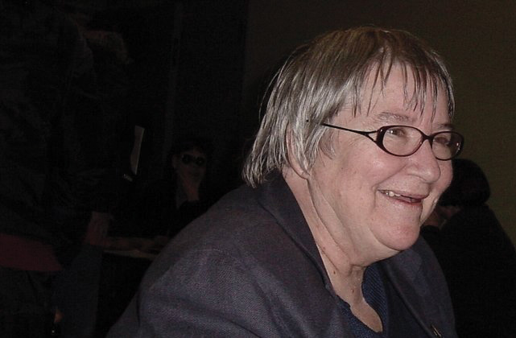

The litigation system relies on parties bringing forth and defending their respective claims. As in the game of chess, each move can take place only if a player makes a decision to move in a particular direction; the game does not play itself. Courts, jurors, and witnesses are similarly moribund: it is up to the players, in this case called litigantsParties in litigation., to act decisively. Occasionally, a court may act sua sponteLatin for “of its own accord,” an action by a court without motion by the parties., without a direct request from a party. A judge may decide, for example, to fine a party for bad or unethical behavior. These actions are fairly rare. More commonly, judges act on a motionAny request to a court for the court to take a specific action. filed by either party asking the judge to make a particular decision.
The party that begins the lawsuit is called the plaintiff in a civil case. The plaintiff is a victim that has presumably suffered some sort of legal wrong that the law recognizes. The plaintiff brings suit against the defendant—the alleged wrongdoer or perpetrator. Note that in a criminal trial, the party that initiates litigation is the prosecution, representing the people of a state or, in federal cases, representing the people of the United States. In a criminal trial the alleged wrongdoer is also called the defendant.
Many cases involve multiple plaintiffs and multiple defendants. Civil procedure encourages, and makes it easy for, parties to air all their grievances against each other at once. All parties, and every possible claimAny legal right to seek a remedy for a wrong. (each claim is a separate violation of law) arising out of a single incident or series of related incidents, should be identified and named in a lawsuit. For example, if you go to an off-campus party one night and witness a friend being harassed, you might feel the need to step in to defend your friend. The harasser may then turn his attention toward you, perhaps taking a swing at you. Let’s assume that the harasser is drunk and misses, but in return you take a swing and hit him, knocking him to the ground. The harasser may file a lawsuit against you, alleging assault and battery. The harasser is the plaintiff, and you are the defendant. The lawsuit filed in court would be captioned Harasser v. You. You might decide in return to file a claim against the harasser, alleging that the harasser started the fight and that you acted in self-defense. This is called a counterclaimA claim by a defendant against the plaintiff., and you are now the counterplaintiffThe original defendant in a lawsuit, when asserting a claim against the plaintiff., making the harasser the counterdefendantThe original plaintiff in a lawsuit, when sued in return by the defendant.. In return, the harasser may allege that he wasn’t really harassing your friend but trying to defend himself from your friend’s unwanted advances. The harasser may sue your friend as a third-party defendant through a process called joinderJoining of parties or claims in litigation..
Except in some small-claims courts, parties hire attorneys to litigate most cases. Sometimes individuals feel like they have a sufficient grasp on the law to proceed in litigation without a lawyer or that they have sufficient legal training (or even a law degree) that hiring a lawyer would be a waste of money. Individuals who represent themselves are called pro seLatin for “on one’s own behalf,” a litigant representing herself without an attorney. litigants and can only proceed pro se if the judge overseeing the case allows it. Abraham Lincoln once famously said, “He who represents himself has a fool for a client.” The complexities of litigation require a cool and detached mind to thread a route to success, and if you are representing yourself it is all too easy to allow passion to cloud your judgment.
Attorneys are sometimes called members of the barA body of attorneys and judges.. The U.S. legal profession is unique in several respects. In most countries, legal education is an undergraduate program followed by a period of apprenticeship before an individual is allowed to practice law. Many countries also make a distinction between attorneys who litigate in court and those who do not. In the United Kingdom, for example, solicitors are lawyers who deal with ordinary legal matters outside of court, while Queen’s Counsel (QC) are specially trained lawyers who are permitted to argue in court. In the United States, lawyers undertake three years of graduate study resulting in the award of the Juris DoctorateA professional degree and doctorate in law, required for practicing law in the United States. degree, or JD. Every year, more than thirty thousand students graduate from U.S. law schools with their JD. They then sit for the bar exam in the state where they wish to practice. Since the practice of law in the United States varies widely by different jurisdictions, lawyers are only permitted to practice in jurisdictions where they are licensed. Some states permit lawyers from out of state, after a few years of being in practice, to apply for bar admission without taking the exam through a process called reciprocity. Other states, notably California and Florida, require attorneys to take the bar exam no matter how long they have been in practice. If a lawyer is dealing with an issue or matter that takes him or her out of state to litigate a case, he or she can ask to be admitted temporarily by a court in that foreign state through a motion called pro hac viceLatin for “for this occasion,” a motion allowing out-of-state attorneys to practice in-state for a specific case or matter.. Once the lawyer passes the state’s bar exam or is otherwise admitted, he or she is permitted to practice all aspects of law in that state, from drafting wills and contracts to arguing a case before the U.S. Supreme Court.
Attorneys in the United States are broadly divided into civil and criminal attorneys; few lawyers excel in both areas. Civil attorneys generally work in two different categories: in law firms, where they may represent multiple clients, and as in-house counselThe attorney employed by and representing only one enterprise., where they represent only one client, their employer. Most large corporations have an in-house legal department to control legal costs but may still hire outside counselLaw firm attorneys representing a company or other enterprise. for representation and advice in complex matters.
With the possible exception of politicians, no other profession is subject to more morbid jokes than lawyering. William Shakespeare famously wrote in Henry VI, through a character speaking of a utopian world, “The first thing we do, let’s kill all the lawyers.” In spite of this public animosity toward lawyers, however, if there comes a time when someone needs a lawyer, it’s not uncommon to hear them wish they had the most aggressive lawyer money can buy.
Perhaps part of the reason the public has a low opinion of lawyers can be traced to the ethical and legal obligations of attorneys. Lawyers may be the most regulated of all the professional industries, and they are required to comply with complex and sometimes rigid rules of professional conductRules for attorney conduct issued by a licensing entity such as a state bar or supreme court. The American Bar Association issues a set of Model Rules of Professional Conduct for attorneys nationwide, which can be found at http://www.abanet.org/cpr/mrpc/mrpc_toc.html.. Unlike rules for other professions, the rules of professional conduct for lawyers are largely drafted and enforced by the bar itself (other lawyers and judges) and almost never involve external enforcement mechanisms. These rules govern virtually every aspect of the practice of law, and a violation of these rules can result in disciplinary action from the state bar or supreme court of the state in which the lawyer practices, up to lifetime disbarment. When President Bill Clinton, for example, lied under oath about certain aspects of his extramarital affairs, he was suspended from practicing law for five years in Arkansas and ordered to pay a $25,000 fine. These rules of professional responsibility require attorneys to represent their clients with zealous advocacy. Ordinarily, we associate the word “zealot” with extremists, but that is the standard by which lawyers must represent their clients. This might clarify why some lawyers act the way they do.
One of the most sacrosanct rules of professional responsibility is the obligation to keep a client’s secrets. The communications between a client and his or her attorney are absolutely confidential under the attorney-client privilegeA doctrine that requires all communications between client and attorney be kept secret by the attorney from any disclosure to any person. doctrine. There are many privileges under the law, such as the spousal privilegeA doctrine protecting communications between spouses from disclosure in court., doctor-patient privilegeA doctrine that prevents medical personnel from testifying in court about their patients’ communications with them., and priest-penitent privilegeA doctrine protecting communications between clergy and penitent from disclosure.. The attorney-client privilege, however, is arguably the strongest of these privileges. The privilege belongs to the client, and the attorney is not permitted to reveal any of these communications without the client’s consent. A narrow exception exists for clients who tell their lawyers they intend to harm others or themselves, but attorneys must tread very carefully to avoid violating the privilege. Many members of the public feel that the privilege may be open to abuse and can’t understand, for example, why an attorney can’t reveal a client’s confession to a heinous crime. Ultimately, the privilege exists for the client’s benefit. Someone who cannot communicate with his or her attorney freely is unable to help the attorney prepare the best possible case for litigation. You should note that in-house attorneys represent the corporations they work for and not individual employees. If you communicate with an in-house attorney for the company where you work, for example, that communication may not be automatically protected by the attorney-client privilege.
Lynne Stewart, a human rights attorney, was assigned to represent Sheik Omar Abdel-Rahman, the blind Egyptian cleric convicted of conspiracy in the 1993 World Trade Center bombing in New York City. As part of her representation, she agreed to abide by certain conditions when communicating with her client, including not speaking to the media. Ms. Stewart broke those promises and inadvertently passed on a communication from her client to his followers around the world. She was indicted and convicted of conspiracy and providing material support to terrorists. She was sentenced to a twenty-eight-month prison term. Click the link to read more about her case, including the legal documents involved. A very controversial aspect of the case involved the use of secret cameras and recorders to listen in on her conversations with her client while he was in prison.
Figure 3.2 Lynne Stewart
Source: Photo courtesy of Robert B. Livingston, http://en.wikipedia.org/wiki/File:Lynne_Stewart.JPG.
In spite of an attorney’s professional obligations to his or her client, it’s important to remember that ultimately a lawyer’s first duty is to the administration of justiceThe highest duty of any attorney.. The rules of professional conduct are written with this goal in mind. The requirements for lawyers on civility, honesty, and fairness are all written to ensure that lawyers represent the very best aspects of our judicial system. Let’s say, for example, a client admits to his lawyer that he is guilty or liable in a case. The client then wants to testify under oath that he is innocent. Although a lawyer cannot tell anyone what her client has told her, the lawyer is also prohibited from knowingly suborning perjuryLying under oath.. The attorney must either convince the client to not testify, or withdraw from the case.
In the case in Note 3.31 "Hyperlink: A Question of Ethics", an attorney goes a little too far in her representation and draws a heavy fine from a judge as a result.
The Case of the Birther Attorney
Order Hon. Clay D. Land, U.S. District Judge, District Court for the Middle District of Georgia, Case No. 4:09-CV-106, Rhodes v. MacDonald, at http://www.scribd.com/doc/20996403/Gov-uscourts-gamd-77605-28-0.
Throughout the presidential election campaign in 2008, persistent rumors swirled around whether Barack Obama was born in the United States, a requirement under the Constitution to serve as president. After the election, California attorney Orly Taitz launched a campaign to prove that the president was not, in fact, born in Hawaii. Her bizarre tirades against the media and the courts earned her this unusual reprimand from a federal judge. Click the link to read the entire order. Do you believe that in their “zealous” representation of their clients, attorneys have the ethical duty to pursue claims such as these?
Order
Introduction
Commenting on the special privilege granted to lawyers and the corresponding duty imposed on them, Justice Cardozo once observed, “Membership in the bar is a privilege burdened with conditions. [A lawyer is] received into that ancient fellowship for something more than private gain. He [becomes] an officer of the court, and, like the court itself, an instrument or agency to advance the ends of justice.” Competent and ethical lawyers “are essential to the primary governmental function of administering justice.” For justice to be administered efficiently and justly, lawyers must understand the conditions that govern their privilege to practice law. Lawyers who do not understand those conditions are at best woefully unprepared to practice the profession and at worst a menace to it.
When a lawyer files complaints and motions without a reasonable basis for believing that they are supported by existing law or a modification or extension of existing law, that lawyer abuses her privilege to practice law. When a lawyer uses the courts as a platform for a political agenda disconnected from any legitimate legal cause of action, that lawyer abuses her privilege to practice law. When a lawyer personally attacks opposing parties and disrespects the integrity of the judiciary, that lawyer abuses her privilege to practice law. When a lawyer recklessly accuses a judge of violating the Judicial Code of Conduct with no supporting evidence beyond her dissatisfaction with the judge’s rulings, that lawyer abuses her privilege to practice law. When a lawyer abuses her privilege to practice law, that lawyer ceases to advance her cause or the ends of justice.
It is irrefutable that a lawyer owes her client zealous advocacy, but her zeal must be constrained within the bounds placed on her as an officer of the Court and under the Court’s rules. Specifically, Rule 11 of the Federal Rules of Civil Procedure expressly sets forth the outer boundaries of acceptable attorney conduct. That rule prohibits a lawyer from asserting claims or legal positions that are not well-founded under existing law or through the modification, extension, or expansion of existing law. Rule 11 also prohibits an attorney from using the courts for a purpose unrelated to the resolution of a legitimate legal cause of action.
Regrettably, the conduct of counsel Orly Taitz has crossed these lines, and Ms. Taitz must be sanctioned for her misconduct. After a full review of the sanctionable conduct, counsel’s conduct leading up to that conduct, and counsel’s response to the Court’s show cause order, the Court finds that a monetary penalty of $20,000.00 shall be imposed upon counsel Orly Taitz as punishment for her misconduct, as a deterrent to prevent future misconduct, and to protect the integrity of the Court. Payment shall be made to the United States, through the Middle District of Georgia Clerk’s Office, within thirty days of today’s Order. If counsel fails to pay the sanction due, the U.S. Attorney will be authorized to commence collection proceedings. The Court does not take this action lightly, and in fact, cannot recall having previously imposed monetary sanctions upon an attorney sua sponte.
As the Orly Taitz case demonstrates, attorneys must take care to respect a court’s authority at all times and conduct themselves in a civil manner. Most attorneys have no problem discharging this obligation to the judge, but it is to the jury that they focus their attention the most. In our legal system, the jury has a very special role to play in ensuring citizen participation in the administration of justice. As the trier of fact, the jury has the duty of determining the truth in any given situation: who said and did what, why, and when?
Do you know when someone is lying to you? Have you ever been lied to so well that you didn’t find out about the lie until much later? Have your roommates or friends who were involved in a dispute ever asked you to decide who should win? In essence, being a juror relies on those same human skills. In every legal proceeding, each of two adversarial sides, absolutely opposed to each other, claims that it is right and the other side is wrong. Our litigation system is a process by which each side gets to present its case to a group of stranger citizens, and then ask them to decide who is lying and who is telling the truth.
There are two types of juries. A grand juryA body of citizens examining whether someone accused of a crime should be formally charged. is a group of citizens convened by the prosecution in serious criminal cases to simply determine whether there is probable cause to believe that a crime has occurred and whether it’s more likely than not that the defendant in question committed the crime. The grand jury serves as a procedural step to prevent prosecutors from abusing their powers of arrest and indictment, a sort of “sanity check” on the awesome power of government to accuse citizens of crime. The grand jury requirement exists at the federal level and in some, but not all, states. A grand jury typically meets for an extended period of time and can hear several different cases in one day.
The grand jury does not determine guilt or innocence. A petit juryA body of citizens determining guilt or innocence in a criminal trial or liability in a civil trial. does that. This jury is impaneled for a specific trial. During the trial, members of the jury listen to the evidence presented and then deliberate as a group on what they believe the facts of the case are. They then apply the law, as instructed by the judge, to the facts. There are typically twelve members in a petit jury in criminal trials and from six to twelve members in civil trials, and generally speaking they must arrive at a unanimous verdict.
The jury system is a jewel in our litigation system for it involves ordinary citizens in adjudicating all sorts of disputes, from domestic family issues to complex business and insurance litigation to heart-wrenching criminal cases. There are problems with administering this system, however.
Both grand and petit juries are drawn from citizen voter and driver license rolls. In high-profile cases, it may be difficult to find citizens who have not heard about the case or who can be impartial about the case, in spite of their promises to be open minded. When Enron collapsed in 2001, for example, defense attorneys for former CEO Jeff Skilling argued strenuously that the trial should not be held in Houston, where almost every citizen was affected in some way by the energy giant’s collapse or knew someone affected. The question of juror bias was so serious that the U.S. Supreme Court agreed to hear Skilling’s appeal based partially on this argument. Although the Court eventually found that Skilling’s jury was adequately impartial, Justice Sotomayor noted in a dissenting opinion that the “deep seated animosity that pervaded the community at large” caused her great concern.Skilling v. United States, 561 U.S. ___ (2010), http://www.supremecourt.gov/opinions/09pdf/08-1394.pdf (accessed October 2, 2010).
Another problem arises from the burdens placed on jurors’ personal lives through their service. While most states have laws that prevent an employer from firing a worker or taking any negative work action, such as demotion, against the worker for being on jury duty, there is no legal requirement that an employer continue to pay a worker on jury duty. The court system does not pay juries for their services either (although some court systems pay a small amount, typically less than twenty dollars per day, to cover food and transportation costs). Some citizens, such as those who are self-employed, are therefore at great risk for losing personal income by serving on juries. Imagine being on the O. J. Simpson criminal trial jury, for example—that trial lasted ten months. The effects of jury service on a juror’s personal life can be staggering.
Another potential problem arises in the makeup of the jury itself. To provide a fair jury, courts attempt to draw from a cross-section of society to reflect the diversity of the surrounding community. Local court rules typically allow judges to excuse potential jurors for hardship or extreme inconvenience. If these rules are too generous, then the only citizens left may be those without full-time employment, such as students or retirees. Such a narrow cross-section of society would tend to skew the reliability and trust of the jury system, and judges across the country are becoming increasingly intolerant of attempts to evade jury service. The only professions that automatically exempt citizens from jury duty are active-duty soldiers, police officers and firefighters, and public officers.
In spite of these administrative problems, our jury system remains a cornerstone of litigation and is often openly admired. In South Korea, for example, attempts to create a more open and responsive democracy resulted in a novel and wholesale revision to the country’s court system: the adoption of citizen juries.
http://www.nytimes.com/2008/07/07/world/asia/07iht-jury.2.14299454.html
In 2007, with little public debate or preparation, South Korea adopted a jury system in certain criminal and civil trials. For now, the jury’s decision is only advisory, and the court is free to reject it. The result has been some confusion about the role of citizens in the legal system, some concern about the methodology employed to implement the jury system, and an increase in transparency and greater citizen participation in government affairs.
The federal rules of civil procedure make it easy for parties in a lawsuit to identify and join other relevant parties and to make legal claims against each other. The goal of civil litigation is to find the truth. Litigants typically rely on lawyers to assist them in litigation. An attorney’s highest duty is to the administration of justice. Lawyers are ethically bound to represent their clients with zealous advocacy. A grand jury acts as a body of citizens to prevent abuse of discretion by prosecutors. A petit jury sits in trials as the trier of fact to ascertain the truth through their observations of the presented evidence.